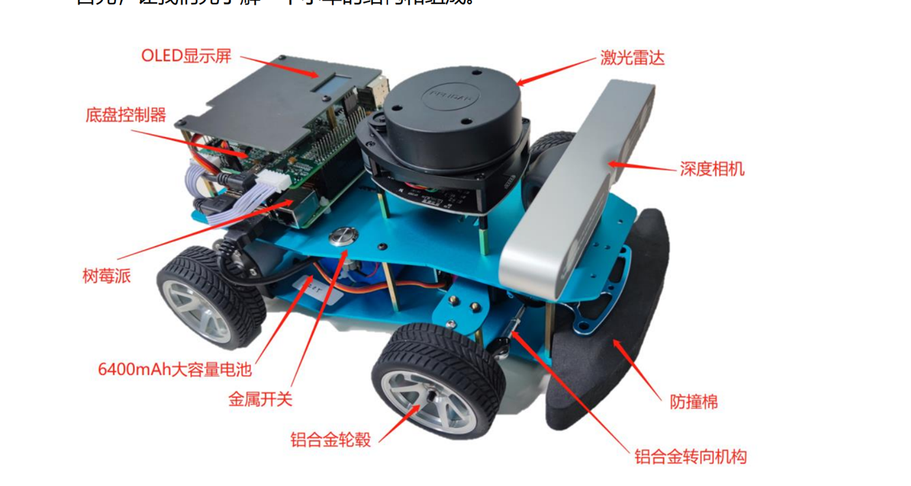

Ros小车简单操作（水！）
ROS 小车文档
ROS小车的结构

小车主要由树莓派 4B、底盘控制器、激光雷达、深度相机、2 个配有编码器的电机以及底盘组成。竞赛版小车增加了麦克风阵列模块，能够实现声源识别和语义识别
能干什么
它可以：
1）无线手柄遥控小车运动
2）使用电脑端的图形界面遥控小车运动
3）使用激光雷达完成 SLAM 构建二维地图
4）在二维地图中完成任意终点的路径规划和动态壁障
5）使用激光雷达完成移动物体的实时跟踪
6）使用深度相机采集深度图像和 RGB 图像
7）使用深度相机结合激光雷达完成三维 SLAM 地图构建
8）在三维地图中完成任意终点的路径规划和动态壁障
9）使用 RGB 摄像头完成车道线和单线巡线
10）实现电量低自动回家功能
11）语音控制小车运动
为啥能做到：由ROS开发
ROS机器人操作系统（Robot Operating System）进行开发。该平台是用于编写机器人软件程序的一种具有高度灵活性的软件架构。它包含了大量工具软件、库代码和约定协议，旨在简化跨机器人平台创建复杂、鲁棒的机器人行为这一过程的难度与复杂度。
能在啥场景下干活
探测地图
在1 的基础之后自主导航
可以做家具机器人的基础，实现基于人语音指令下的定向空间运动
（我们自己的模块之一）：接入ChatGPT实现对话（but 还有音频接口问题尚待解决）
使用方法（比较复杂）
打开小车的开关（摁下按钮），其远程主机（也就是用户的电脑）连接小车的WIFI。
WiFi 名称： NCUT-EPRobot
密码： 12345678 打开Bitvise SSH Client，填上参数
点击Login_in就发现左侧这些栏目多了个New Terminal和可以打开GUI界面的文件系统按钮。在 New Terminal那个地方输入指令。
SubModule1: 手柄控制
打开CMD窗口后输入
roslaunch eprobot_start EPRobot_joy_start.launch 可以用手柄啦！
SubModule2: 语言控制
打开CMD窗口后输入
roslaunch xf_mic_asr_offline voice_control.launch 控制台上会输出大量的信息，随后站在车前说出关键词：梦工厂小车会摇动一下轮子表示接受到了，以表示被唤醒。
当唤醒小车后，便可按照启动时的终端提示进行语音控制。目前小车只能够响应小车前进”、“小车后退”、“小车停”、“小车左转”以及“小车右转”，更多的响应可自行编程实现。需要注意的是，该麦克风阵列的语义识别是按照关键词进行的，小车搭载的功能包中，将“小车”设定为主语关键词，“后退”、“前进”为动词关键词，只要一句话中包含这两组关键词，小车就可以响应，如“亲爱的小车请向后退”，小车便可后退一段距离。
Attention：注意，小车拥有降噪功能，实现的原理是检测声音位置并将离声源位置最近的麦克风设置成主麦克风，因此，背离主麦克风说话可能不会接收到（此次置信度过低而被小车判定为噪音过滤掉了）
其余的模块因为演示周期过长（而且复杂，强制要求使用Ubuntu16.04操作系统并且操作复杂，鉴于是科普性的讲座，还是思来想去略去了）
About 比赛等
因为是这个学期刚刚接手这个项目，因此只拿之参加了吉林省智能机器人大赛，还尚未到比赛结束日期，正在开发中。所以尚未有获奖记录。